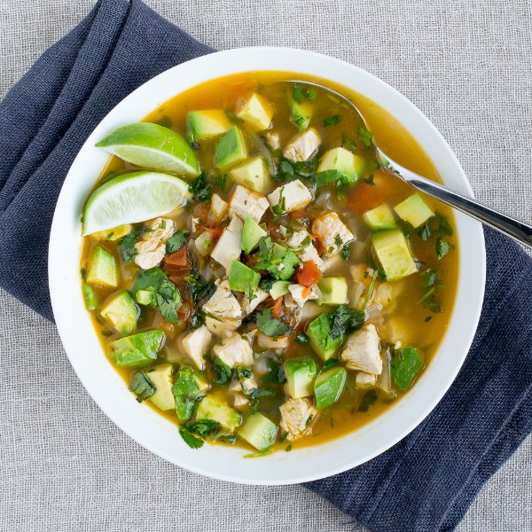

Avocado Chicken Soup with Lime & Cilantro

Total Time
45 min
Nutrition (per serving)
535.3 kcalCalories
50 gProtein
24.7 gCarbs
28.8 gFat
Full nutrition table
| Calories | 535.3 kcal |
| Total fat | 28.8 g |
| Saturated fat | 9.8 g |
| Trans fat | 0.1 g |
| Cholesterol | 124.2 mg |
| Sodium | 214 mg |
| Carbohydrates | 24.7 g |
| Fiber | 9.7 g |
| Sugars | 6.4 g |
| Protein | 50 g |
| Potassium | 1867.8 mg |
| Calcium | 77.7 mg |
| Iron | 3 mg |
| Vitamin A | 1227.7 IU |
| Vitamin C | 50.2 mg |
| Vitamin D | 1.7 IU |
Cookware
Ingredients
- 2avocados
- 1 ½ lbchicken breasts, boneless skinless
- 48 fl ozchicken or vegetable broth
- 1 small bunchcilantro
- 4 clovesgarlic
- 2jalapeño peppers
- 2limes
- 4tomatoes
- 1 mediumyellow onion
- black pepper
- cumin, ground
- salt
- virgin coconut oil
Steps
- Wash jalapeños and tomatoes. Seed and mince jalapeños. Medium dice tomatoes.2 jalapeño peppers
4 tomatoes - Peel and small dice onion. Peel and mince garlic.1 medium yellow onion
4 cloves garlic - Heat a large pot over medium heat.
- Add oil to pot and swirl to coat bottom. Add onion and jalapeños; cook, stirring frequently, until tender, 2-3 minutes.2 tbsp virgin coconut oil
- Add garlic and tomatoes to saucepan; cook for about 1 minute.
- Slice chicken in half horizontally into thin fillets.1 ½ lb chicken breasts, boneless skinless
- Add broth, cumin, salt, and pepper to saucepan.48 fl oz (6 cups) chicken or vegetable broth
½ tsp cumin
½ tsp salt
¼ tsp black pepper - Place chicken in liquid and bring to a boil. Reduce heat back to medium, cover, and cook until chicken is cooked through, 8-10 minutes. Once cooked, transfer chicken to a plate.
- Wash and dry cilantro. Shave leaves off the stems; discard the stems and chop the leaves.1 small bunch cilantro
- Halve and pit avocados. Spoon out the flesh and medium dice.2 avocados
- Shred or dice chicken and return to saucepan. Stir in ¾ of the cilantro (save the rest for garnishing) and lime juice.juice of 1 lime
- Cut remaining lime to wedges.
- Serve soup in a bowl, stir in avocado, and garnish with remaining cilantro and lime wedges.